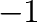

We now give simple examples of the usage of these commands. Consider the calculation
of the free energy of the phase associated with ground state number as a function of concentration and temperature. Then, the required commands could, for instance, be
| emc2 -gs=1 -mu0=1.5 -mu1=0.5 -dmu=0.04 -T0=300 -T1=5000 -dT=50 -k=8.617e-5 -dx=1e-3 -er=50 -innerT -o=mc10.out |
| emc2 -gs=1 -mu0=1.5 -mu1=2.5 -dmu=0.04 -T0=300 -T1=5000 -dT=50 -k=8.617e-5 -dx=1e-3 -er=50 -innerT -o=mc12.out
|
(The only difference in the two command lines is the value of -mu1 and the
output file name, specified by the -o option.)
These commands separately compute the two “halfs” of the free energy surface, corresponding to
the values of the chemical potential below and above the “middle” value of
which stabilizes ground state at absolute zero.
This natural separation allows you to run each half calculation on a separate processor
and obtain the results in half the time.
The values of -dmu, -dT, -dx and -er given here are typical
values. The user should ensure that these values are such that the results are converged.
Note that, thanks to the way these precisions parameters are input, if satisfying values
have been found for one simulation, the same values will provide a comparable accuracy
for other simulations of the same system.
The option -innerT indicates that the inner loop of the sequence of simulations scans the temperature axis while the outer loop scans the chemical potential.
In this fashion, the point of highest temperature in the region of stability of the phase will be known early during the calculations.
If the user is more interested in obtaining solubility limits early on, this option can be omitted and the inner loop with scan the chemical potential axis.
In either cases, the code exits the inner loop (and the outer loop, if appropriate) when it encounters a phase transition.
The emc2 code thus enables the automated calculation of the whole free energy surface of a given phase,
as illustrated in Figure 5.4a. Such free energy surfaces can be used as an input to construct thermodynamic databases or supplement
existing ones. To facilitate this process, a utility that converts the output of emc2 into input files for the fitting module of ThermoCalc is provided.
Figure 5.4:
Output of Monte Carlo codes. a) The emc2 provides free energy surfaces as a function of temperature  and composition
and composition  .
(For clarity, the common tangent construction (thick lines) is drawn over the calculated free energy.)
b) The phb command generates temperature-composition phase diagrams. The calculational details
underlying these results can be found in [24,22]
.
(For clarity, the common tangent construction (thick lines) is drawn over the calculated free energy.)
b) The phb command generates temperature-composition phase diagrams. The calculational details
underlying these results can be found in [24,22]
|
|
While the above examples focus on the calculation of a phase's thermodynamic
properties over its whole region of stability, one may be interested in directly computing
the temperature-composition phase boundary without first constructing a full free energy surface. To accomplish this task, a typical command-line for the phb program would be
| phb -gs1=0 -gs2=1 -dT=25 -dx=1e-3 -er=50 -k=8.617e-5 -ltep=5e-3 -o=ph01.out |
This command computes the two phase equilibrium between phase 0 and phase 1,
starting at absolute zero and incrementing temperature in steps of K.
(The -ltep option indicates that a Low Temperature Expansion (LTE)
should be used instead of Monte Carlo simulation whenever its precision is
better than
eV.)
The output file ph01.out contains the temperature-composition phase boundary
of interest, as well as the chemical potential stabilizing the two-phase equilibrium
as a function of temperature. This output can be used to generate phase diagrams,
as illustrated in Figure 5.4b.
The program automatically terminates when the “end”
of the two-phase equilibrium has been reached. If the two-phase equilibrium disappears because
of the appearance of a third phase, two new two-phase equilibria have to be separately
calculated. To do so, one uses the final temperature and chemical potential  given in
the output file as a starting point for two new phb runs:
given in
the output file as a starting point for two new phb runs:
| phb -T= -mu=-gs1=0 -gs2=-1 -dT=25 -dx=1e-3 -er=50 -k=8.617e-5 -o=ph0d.out |
| phb -T= -mu=-gs1=-1 -gs2=1 -dT=25 -dx=1e-3 -er=50 -k=8.617e-5 -o=phd1.out
|
In the above example, it is assumed that the new phase appearing is the disordered phase (indicated by the number ), which will usually be the case.
Of course, it is also possible that a given two-phase equilibrium terminates because one of the
two phases disappears. In this case, only one new calculation needs to be started, as in
the following example:
| phb -T=-mu=-gs1=0 -gs2=2 -dT=25 -dx=1e-3 -er=50 -k=8.617e-5 -o=phd1.out
|
Note that phase has been replaced by phase  . Finally, it is also possible that the two-phase equilibrium
terminates because the concentration of each phase converges to the same value, a situation
which requires no further calculations.
The user can easily distinguish these three cases by merely comparing the
final composition of each phase.
. Finally, it is also possible that the two-phase equilibrium
terminates because the concentration of each phase converges to the same value, a situation
which requires no further calculations.
The user can easily distinguish these three cases by merely comparing the
final composition of each phase.
avdw@alum.mit.edu Wed, Dec 6, 2023 12:55:16 PM